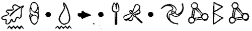
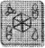

ROOT öne eğilip mikrofonun içine doğru kükredi. “Mulch! Neler oluyor? Pozisyonun nedir?”
Foaly öfkeyle bir klavyeyi tıkırdatıyordu. “Sesi kaybettik. Hareketi de.”
“Mulch. Konuş benimle, kahrolası.”
“Yaşamsal işlevlerini gözden geçireceğim.... Vaay!” “Nedir? Ne oluyor?”
“Kalbi deli gibi hızlanmış. Tıpkı bir tavşan gibi atıyor...”
“Tavşan mı?”
“Yo, durun, bu...”
“Ne?” diye soludu kumandan, yanıtı önceden biliyor olmasından korkarak.
Foaly sırtını sandalyesine dayadı. “Durdu. Kalp atışları durdu.”
“Emin misin?”
“Monitörler yalan söylemez. İris kamerasından tüm yaşamsal işlevleri okunabilir. Kıpırtı yok. Ölmüş.”
Root duyduklarına inanamıyordu. Mulch Diggums, hayatın değişmez unsurlarından biri. Ölmüş müydü? Bu gerçek olamazdı.
“Aslında biliyor musun, yine de başardı, Foaly. Kitabın bir kopyasını buldu ve Short’un hayatta olduğunu bildirdi.” Foaly’nin koca alnı bir an kırıştı. “Şey, bir dakika...” “Ne?” dedi Root, kuşku içinde.
“Şey, bir an için, yani ölmeden hemen önce, kalp atışları anormal hızlanmış gibiydi."
“Belki de bir sistem hatasıydı.”
Foaly tatmin olmamıştı. “Sanmıyorum. Virüslerimde virüs yoktur.”
“Başka ne tür bir açıklaması olabilir ki? Hâlâ görüntü var, değil mi?”
“Evet. Ölü gözlerden geliyor, bundan eminim. Bu beyinde tek bir elektrik kıvılcımı bile yok, kamera kendi pilleriyle çalışıyor.”
“Pekâlâ, demek ki hepsi bu. Başka açıklaması yok.” Foaly başını salladı. “Böyle görünüyor olabilir. Ama... Yo, bu fazla gerçekdışı olurdu.”
“Burada, Mulch Diggums’tan söz ediyoruz. Hiçbir şey fazla gerçekdışı değildir.”
Foaly inanılmaz kuramını dile getirmek için ağzını açtı ama henüz konuşamadan mekiğin sürgülü kapısı kayarak açıldı.
“Onu ele geçirdik!” dedi zafer dolu bir ses.
“Evet!” diye onayladı ikincisi. ‘.‘Fowl bir hata yaptı!” Root sandalyesini çevirdi. Gelenler, Argon ile sözde davranış bilim uzmanı Cumulus’du.
“Oh, demek en sonunda aldığınız parayı hak etmeye karar verdiniz, öyle mi?”
Ama profesörlerin gözünü korkutmak sanıldığı kadar kolay değildi. Heyecan onları bir araya getirmişti. Hatta Cumulus, Root’un iğneleyici sözlerini bile duymazdan gelecek kadar atak davranmıştı. Her şeyden çok, kumandanı bu davranışı etkiledi ve doğrulup dediklerini dikkate aldı.
Argon, Foaly’nin önünden hızla geçip bilgisayarın sürücüsüne, bir lazer disk yerleştirdi. Ekranda Artemis Fowl’un yüzü belirdi, Root’un iris kamerasından görüldüğü haliyle.
“Haberleşeceğiz,” dedi kumandanın kayıtlı sesi. “Merak etme, çıkış yolunu kendim bulabilirim.”
Root sandalyesinden kalkarken, Fowl’un yüzü bir anlık ortadan kayboldu. Root bir sonraki ürpertici ifadesini görüntüleyebilmek için, bakışlarını tam zamanında kaldırmıştı.
“Nasıl isterseniz. Ama unutmayın ki ben yaşadıkça, soyunuzdan hiç kimsenin buraya girmeye izni yok.” Argon bir zafer edasıyla resmi dondurdu. “İşte orada, gördünüz!”
Root’un yüzünde solgunluktan eser bile kalmamıştı. “Orada mı? Orada olan ne? Ne görüyorum?” Cumulus karşısında zor anlayan bir çocuk varmış gibi onu ayıpladı. Geçmişe bakılacak olursa, bu bir hataydı. Yarbay onu bir saniye içinde sivri uçlu sakalından yakaladı.
“Şimdi,” dedi aldatıcı sakinlikte bir ses tonuyla.
“Burada zaman sıkıntısı çektiğimizi varsay ve hiçbir tavır almaksızın ya da hiçbir yorum yapmaksızın bana yalnızca durumu açıkla.”
“İnsan, o hayattayken, oraya giremeyeceğimizi söyledi,” diye ciyakladı Cumulus.
“Yani?”
Argon konuya açıklık getirdi. “Yani... o hayattayken giremezsek...”
Root derin bir soluk aldı. “Demek ki öldüğünde gireriz.”
Cumulus ile Argon’un yüzleri sevinçle parladı. “Kesinlikle,” dedi ikisi bir ağızdan.
Root çenesini kaşıdı.
“Bilmiyorum. Yasal olarak, olmamamız gereken bir yerde bulunuyoruz.”
“Hiç de değil,” diye karşı çıktı Cumulus. “Bu temel dilbilgisi, insan hayatta olduğu sürece girişin yasak olduğunu açık açık söyledi. Bu da öldüğünde davetli olduğumuz anlamına gelir.”
Yarbay tatmin olmamıştı. “Bu davet, bana imalıymış gibi geldi.”
“Hayır,” diye söze karıştı Foaly. “Haklılar. Durum ortada. Fowl öldüğünde, kapılar ardına kadar açılacak. Kendi söyledi.”
“Belki.”
“Belki hiçbir şey,” diye ağzından kaçırdı Foaly. “Tanrı aşkına, Julius, daha ne istiyorsun? Belki farkında değilsindir diye söylüyorum, burada bir kriz yaşıyoruz.” Root yavaşça başını salladı. “Birincisi, haklısın. İkincisi, harekete geçeceğim. Üçüncüsü, ikinize de aferin. Ve dördüncüsü, beni bir daha Julius diye çağıracak olursan Foaly, sana kendi toynaklarını yedirtirim. Şimdi, Komisyonu aramam için bana bir hat ver. Altın için gerekli onayı almam gerek.”
“Hemen, Yarbay Root, emredersiniz.” Foaly sırıttı, Holly’nin hatırına, şu toynak yemekle ilgili yorumu duymazdan gelmişti.
“Yani şöyle, altını onlara veriyoruz,” diye mırıldandı Root, yüksek sesle düşünerek. “Bize Holly’yi gönderiyorlar, biz her yeri mavi durulamadan geçiriyoruz ve fidyenin iadesi için içeri giriyoruz. Bu kadar basit.” “Bu kadar basit ve mükemmel,” diye övgüler yağdırdı Argon. “Mesleğimiz açısından ne büyük bir başarı, sizce de öyle değil mi, Doktor Cumulus?”
Cumulus’ün aklından bin bir türlü olasılık geçiyordu. “Konferanslar, kitap anlaşmaları. Yalnızca filmin telif hakları bile, bir servet değerinde olacak.”
“Bırakın şu sosyologların saçma düşüncelerini. Bir şeyden yoksun bırakılmanın, insanda antisosyal davranışlara neden olduğu sonucuna varacağınız kesin. Bu Fowl karakteri, hayatında hiç açlık çekmemiş olmalı.” “Birden fazla açlık çeşidi vardır,” diye belirtti Argon. “Çok doğru. Başarı açlığı. Hükmetme açlığı. Bir de-” “Dışarı,” diye tersledi onları Root. “İkinizi birden boğmadan, çıkın dışarı. Ve bu sözlerden herhangi birini öğleden sonraki tartışma programlarından birinde duyacak olursam, bunu sizden bileceğim, ona göre.” Danışmanlar dikkatlice geri çekildiler ve kimsenin duymayacağı bir yere gidene kadar, menajerlerini aramamaya karar verdiler.
“Komisyon bu öneriyi kabul eder mi, bilmiyorum,” dedi Root, danışmanlar çıkınca. “Bu kadar altın, çok fazla.”
Foaly konsolun üzerinden baktı. “Tam olarak ne kadar?”
Yarbay, masanın öbür tarafına bir kâğıt parçası uzattı. “Bu kadar.”
“Bu çok fazla.” Foaly ıslık çaldı. “Bir ton. Küçük, işaretlenmemiş külçeler. Hepsi yirmi dört ayar. Ama en azından yuvarlak bir sayı.”
“Çok rahatlatıcı. Bunu Komisyona söyleyeceğimden emin olabilirsin. Şu hattı açamadın mı, hâlâ?”
Foaly homurdandı. Bu olumsuz bir homurtuydu. Yüksek rütbeli bir memura homurdanmak çok küstahçaydı. Root’un onu terbiye etmeye zamanı yoktu ama aklının bir köşesine yazdı: Bu iş bitince, Foaly’nin maaşını birkaç yüzyıl boyunca kes. Root gözlerini ovuşturdu, bitkindi. Zaman farkı kendini göstermeye başlamıştı. Beyni uyumasına izin vermese de zaman durdurumu başladığında beri uyanık olduğu için, bedenin dinlenmeye ihtiyacı vardı.
Root sandalyesinden kalkıp içeri biraz hava girsin diye, kapıyı ardına kadar açtı. Durmuş zaman havası berbattı. Bırakın bir oğlan çocuğunu, moleküller bile, zaman diliminden paçayı kurtaramazlardı.
Kapının yanında hareketlilik vardı. Hem de oldukça bir hareketlilik vardı. Birlikler grup halinde uçan bir kafesin çevresinde toplanmışlardı. Sıranın başında Cudgeon vardı ve bütün tim onu izliyordu. Root yanlarına gitmek için mekikten indi.
“Nedir bu?” diye sordu sevimsizce. “Bir sirk mi?” Cudgeon’un yüzü solgun ama kararlıydı.
“Hayır Julius. Bu sirkin sonu.”
Root başını salladı. “Anladım. Ya bunlar, palyaço mu?” Foaly başını kapıdan dışarı uzattı.
“Uzayıp giden sirk muhabbetinizi böldüğüm için özür dilerim ama nedir bu kahrolası şey?”
“Evet, Binbaşı,” dedi Root, başıyla havada sallanan uçan kafesi işaret ederek. “Nedir bu kahrolası şey?” Cudgeon birkaç kez derin derin soluyarak .cesaretini topladı. “Seni örnek aldım, Julius.”
“Eee, ne olmuş yani?”
“Sen işe yaramaz bir yaratığı içeri göndermeye karar vermiştin ya. Ben de şimdi bunu yapacağım.”
Root tehlikeli bir gülüş attı. “Sen hiçbir şey yapmaya karar veremezsin, Binbaşı, en azından ben sana emredinceye kadar.”
Cudgeon bilinçsizce geriledi.
“Komisyona danıştım, Julius. Onların tam desteğini aldım.”
Yüzbaşı Foaly’ye döndü. “Doğru mu, bu?”
“Öyle görünüyor. Dış hattan bildirildi. Bu, artık Cudgeon’ın partisi. Komisyona, fidye talebini ve sizin Bay Diggums’ı hapishaneden salıvermenizi anlatmış. Konu altın olunca, yaşlıların nasıl davrandıklarını bilirsiniz.”
Root kollarını kavuşturdu. “Beni senin hakkında uyarmışlardı, Cudgeon. Beni arkamdan vuracağını söylemişlerdi. Onlara inanmadım. Ne aptalmışım.”
“Bunun bizimle bir ilgisi yok, Julius. Görevle ilgili. Başarımız, şu uçan kafesin içindekine bağlı.”
“Peki, ne var o kafesin içinde? Yo,' söyleme. Yeraltı Teşkilatındaki, sihrini kaybetmiş en son yaratık. Ye bir asrı aşkın bir süredir, canlı ele geçirmeyi başarabildiğimiz ilk troll.”
“Aynen. Düşmanımızı ortadan kaldırmak için bize gereken yaratık.”
Root’un yanakları öfkesini bastırmaya çabalarken, kor gibi parladı.
“Bunu aklına bile getirebildiğine inanmıyorum.” “Kabul et, Julius, senin temel düşüncenle bire bir aynı.”
“Hayır, değil. Mulch Diggums, kendi kararını kendi vermişti. Olayın riskini biliyordu.”
“Diggums öldü mü?”
Root bir kez daha gözlerini ovuşturdu. “Evet. Öyle görünüyor. Mağara çökmüş.”
“Bu da, haklı olduğumu kanıtlıyor. Oysa bir troll bu kadar kolayca ölmez.”
“Tanrı aşkına, sersem hayvanın teki o! Bir troll talimatlara nasıl uyabilir ki?”
Cudgeon gülümsedi, endişesinin yanında, yeni yeni ortaya çıkan özgüveni de fark ediliyordu.
“Ne talimatı? Biz yalnızca onu eve yöneltip yolundan çekiliyoruz. Bu insanların, onları kurtarmamız için bize yalvaracaklarını garanti ediyorum.”
“Peki ya memurum ne olacak?”
“Yüzbaşı Short herhangi bir tehlikeyle karşılaşmadan uzun süre önce, troll çoktan kilit altına alınmış olacak.” “Bunu garanti edebiliyorsun, değil mi?”
Cudgeon durakladı. “Bu, benim göze almayı kabul... Komisyonun göze almayı kabul ettiği bir risk.”
“Politika,” diye tükürdü Root. “Tüm bunlar senin için politikadan başka bir şey değil, Cudgeon. Komisyonda bir koltuk uğruna, övünebileceğin bir başarı elde etmek. Midemi bulandırıyorsun.”
“Sen ne istersen düşün, biz bu stratejiyi uygulayacağız. Komisyon beni, Vekâleten Yarbay olarak atadı, bu yüzden, eğer ortak geçmişimizi bir kenara bırakamıyorsan, çek git yolumdan.”
Root kenara çekildi. “Merak etme, Yarbay. Ben bu katliamda yokum. Bu şeref sana ait.”
Cudgeon en içten bakışını takındı. “Julius, aksini düşünsen de beni yürekten ilgilendiren tek şey, Peri Halkı.” “Özellikle de içlerinden biri,” diye burnundan soludu Root.
Cudgeon moralini yüksek tutmaya çalıştı.
“Burada durup bunları dinlemek zorunda değilim. Seninle konuştuğum her an, benim için kayıp bir saniye demek.”
Root Cudgeon’ın gözlerinin içine baktı. “Yani toplam, altı yüz yıl boşa gitmiş, söyle, öyle değil mi, arkadanım?”
Cudgeon yanıt vermedi. Ne söyleyebilirdi ki? Tutkunun bir bedeli vardı ve bu bedel arkadaşlıktı.
Cudgeon spritetan oluşan yalnızca kendisine sadık, özenle seçilmiş bir timin başına döndü. “Uçan kafesi caddeye taşıyın. Size komut verene kadar, harekete geçmiyorsunuz.”
Cudgeon eski dostuyla göz göze gelmemeye çalışarak, Root’un önünden hızla geçti. Foaly bir yorum yapmadan gitmesine izin veremezdi.
“Hey, Cudgeon.”
Yarbay Vekili bu kadarına dayanamazdı, özellikle de görevinin ilk gününde.
“Dediklerine dikkat et, Foaly. Hiç kimse, vazgeçilmez değildir.”
Foaly kıkırdadı. “Çok doğru. Politikada da böyledir, sana tek bir fırsat verilir.”
Cudgeon her şeye rağmen pek ilgilenmiyormuş gibi görünüyordu.
“Ben olsaydım,” diye sürdürdü konuşmasını Foaly, “ve Komisyonda bir koltuk sahibi olmam için bana bir şans verilseydi, tek bir şans, geleceğimi kesinlikle bir trolle emanet etmezdim.”
Ve bir anda, Cudgeon’un yeni yeni ortaya çıkan özgüveni buharlaşarak, yerini bitkinliğe bıraktı. Alnını silip caddeye taşman kafesin arkasından koşturdu.
“Yarın görüşürüz,” diye bağırdı Foaly, arkasından. “Çöplerimi dışarı çıkartıyor olacaksın.”
Root güldü. Herhalde ilk kez, Foaly’nin bir şakası onu güldürüyordu.
“Aferin, Foaly.” Root sırıttı. “Kalleşi en zayıf yerinden vur, başarı tutkusundan.”
“Teşekkürler, Julius.”
Root’un gülümsemesi, LEP kantinindeki, bol yağda kızarmış salyangozlardan bile daha büyük bir hızla eriyip gitmişti.
“Seni bu Julius konusunda uyardım, Foaly. Şimdi şu dış hattı yeniden aç. Cudgeon’ın planı ters gitmeye başladığında, altının hazır olmasını istiyorum. Komisyondaki tüm yandaşlarımla görüş. Lope’un, beni destekleyeceğinden eminim, Cahartez’in de, Vinyâya da olabilir. O kadının bana karşı her zaman zaafı olmuştur, öylesine şeytani bir çekiciliğim var ki.”
“Şaka yapıyorsunuz, tabii.”
“Asla şaka yapmam,” dedi Root ve bunu çok ciddi bir yüz ifadesiyle söyledi.
Holly’nin bir tür planı vardı. Kalkanını indirip gizli gizli ortalarda dolaşacak, peri silahlarının geri verilmesini isteyecek, sonra da Fowl kendisini bırakmaya mecbur kalıncaya kadar çevresindeki her şeyi yıkıp dökecekti. Artık malikânede birkaç milyon İrlanda sterlini değerinde zarar meydana gelirse, bu da işin ikramiyesiydi.
Holly yıllardır kendini bu denli iyi hissetmemişti. Gözleri güçle parlıyor ve teninin her santimetre karesinden alev alev yanan kıvılcımlar yayılıyordu. Damarlarında dolaşan bu sıcaklığın, onu ne kadar iyi hissettirdiğini unutmuştu.
Artık kontrol Yüzbaşı Short’un elindeydi, ava çıkıyordu. Bunun için eğitilmişti. Bu iş başladığında, üstünlük Çamur Adamlarındı. Ama artık durum tam tersine dönmüştü. Artık o avcı, onlarsa avdı.
Holly yüksek merdivenleri gözden geçirip dev hizmetkârın oralarda olmamasına dikkat etti. Bu adam Holly’nin asla riske atılmayacağı türden biriydi. O koca parmakları kafatasını saracak olsa, miğferi ister başında olsun, ister olmasın, Holly tarih olurdu, tabii miğferini bulabilirse eğer.
Bu koskocaman ev, bir anıtmezara benziyordu — kemerli odalarının içinde hiçbir yaşam belirtisi yoktu. Ama bir sürü ürkütücü portre asılıydı. Hepsinde de Fowllar’a özgü o kuşku dolu, pırıltılı gözler vardı. Holly, Neutrino 2000’ine kavuşunca, hepsini ateşe vermeye karar verdi. Biraz kinci bir davranıştı belki, ama Artemis Fowl’un ona yaptıklarını düşünülecek olursa, kesinlikle adildi.
Holly üst sahanlığı çepeçevre saran kıvrımı izleyerek basamakları hızla tırmandı. Koridorun sonundaki odanın kapısının altından, solgun bir ışık yansıyordu. Holly avcunu kapıya dayayıp titreşimleri hissetmeye çalıştı. İçeride bir etkinlik vardı. Bağırtılar ve ayak sesleri kapıya doğru gümbür gümbür geliyordu.
Holly geriye doğru sıçrayıp kendini kadifemsi duvar kâğıdına iyice yapıştırdı. Tam zamanında. İriyarı ve hantal bir şekil, kapıdan dışarı fırladı ve ardında bir girdap bırakarak fırtına gibi koridora doğru ilerledi.
“Juliet,” diye bağırdı, ama adam merdivenlerden inip gözden kaybolduktan uzun süre sonra bile, kız kardeşinin adı hâlâ yankılanıyordu.
Merak etme, Kâhya, diye düşündü Holly. Juliet Güreş Dünyası programına kenetlenmiş, hayatının en mutlu gününü yaşıyor. Açık duran kapı Holly’nin içeri girebilmesi için uygun bir fırsattı. Mekanik kol kapıyı kilitlemeden hemen önce, sessizce içeri girmeyi başardı.
Artemis Fowl kalkansavarlı güneş gözlüğünü takmış, onu bekliyordu.
“iyi akşamlar, Yüzbaşı Short,” diye başladı söze, özgüveninden hiçbir şey kaybetmemiş gibi. “Sana basmakalıp bir söz gibi gelebilir belki ama ben de seni bekliyordum.”
Holly yanıt vermedi, hatta gardiyanının gözlerinin içine bile bakmadı. Kendisine öğretildiği gibi bakışları her yeri kısaca tarayarak, odayı gözden geçirdi.
“Hiç kuşkusuz, bu akşamın erken saatlerinde verilmiş sözlerine bağlısın hâlâ...”
Ama Holly onu dinlemiyordu, arka duvara vidalanmış, paslanmaz çelikten tezgâha doğru hızla ilerliyordu.
“Yani, temel olarak durumumuzda bir değişiklik olmadı. Benim rehinemsin hâlâ.”
“Tabii, tabii, tabii,” diye mırıldandı Holly, parmaklarını Düzeltme Timinin insanlarca el konulmuş donanımının üzerinde gezdirerek, içlerinden gizli-kaplamalı miğferi alıp sivri kulaklarının üzerine taktı, içindeki hava yastıkları, başına uyum sağlayacak biçimde şiştiler. Holly artık güvendeydi. Fowl’un verdiği emirler, yansıtıcılı siperliğin ardından hiçbir anlam ifade etmezdi. Bir kablolu mikrofon, otomatik olarak indi. Bağlantı hemen sağlanmıştı.
“… döner frekanslardan. Yayın döner frekanslardan. Holly, beni duyabiliyorsan, gizlenmeye çalış.”
Holly Foaly’nin sesini tanımıştı. Bu çılgın ortamda tanıdık bir sesti.
“Tekrar ediyorum. Gizlenmeye çalış. Cudgeon oraya bir...”
“Bilmem gereken bir şey mi var?” dedi Artemis.
“Sessiz ol” diye tısladı Holly, genelde küstahça konuşan Foaly’nin ses tonu onu kaygılandırmıştı.
“Bir kez daha söylüyorum, çıkışını güvence altına almak için, oraya bir troll gönderiyorlar.”
Holly irkildi. Artık atışlara Cudgeon karar veriyordu. Bu hiç de iyi bir haber değildi.
Fowl yine araya girdi.
“Bu yaptığın hiç de kibar bir davranış değil. Ev sahibini duymazdan gelmek.”
“Yeter artık,” diye hırladı Holly.
Yumruğunu geriye doğru çekti, parmakları birbirine sıkıca kenetlenmişti. Artemis yana kaçmadı. Neden kaçsındı ki? Nasıl olsa Kâhya yumruk inmeden önce, koşup araya girerdi. Ama sonra, Artemis’in dikkatini çeken bir şey oldu, birinci katın monitöründe, merdivenlerden aşağı inen iriyarı biri. Bu Kâhya idi.
“Doğru, zengin çocuk,” dedi küstahça Holly. “Bu kez, yalnız başınasın.”
Ve Artemis’in gözleri ardına kadar açıldı ve Holly dirseğine biraz daha esneklik kazandırıp yumruğunu, kendisini kaçıran çocuğun burnunun tam ortasına indirdi.
“Offf,” dedi Artemis, popo üstü düşerek.
“Oh, işte bu! Harikaydı.”
Holly kulağının içinde vızıldayan sese odaklandı.
“... dış kameralara kapalı devre yükledik, böylece insanlar caddedeki olayların hiçbirini göremiyorlar. Ama yola çıktı, inan bana.”
“Foaly. Foaly, kendine gel.”
“Holly? Sen misin?”
“Tabii ki benim. Foaly, kapalı devre falan yok. Burada olup biten her şeyi görebiliyorum.”
“Vay canına, kurnaz çocuk... Demek sistemi kapatıp yeniden başlatmış.”
Cadde perilerden oluşan bir arı kovanı gibiydi. Cudgeon kibirli kibirli, peri takımına emirler yağdırıyordu. Ve bu meydan kavgasının tam ortasında, hava yastıklarının üzerinde dalgalanan, beş metre uzunluğunda bir uçan kafes duruyordu. Kafes malikânenin kapısının tam karşısındaydı ve teknisyenler çevresindeki surlara bir şok kilidi takıyorlardı. Harekete geçirildiğinde, kilidin içindeki alaşım çubukları birbiri ardına patlatılacak ve kapı parçalanacaktı. Tozlar yatıştığında trollün gidecek tek bir yeri kalacaktı - malikâne.
Holly öbür monitörleri kontrol etti. Kâhya Juliet’i hücreden çıkartmayı başarmıştı. Mahzenin üst katma çıkmışlardı ve şu an koridordan geçiyorlardı. Tam ateş hattının üzerindeydiler.
“D’Arvit,” diye küfretti Holly, çalışma tezgâhının yanma giderek.
Artemis dirseklerinin üzerinde doğruldu. “Bana vurdun,” dedi şaşkınlıkla.
Holly bir çift Sinekkuşu taktı.
“Doğru, Fowl. Ve geldiği yerde, ona benzer bir sürü yumruk daha var. Bu yüzden, kendi iyiliğin için, olduğun yerde kal.”
Hayatında ilk kez Artemis, verecek yerinde bir cevabı olmadığını fark etti. Ağzını açıp beyninin etkileyici bir yanıt vermesini bekledi. Ama hiçbir şey olmadı.
Holly Neutrino 2000’ini tabanca kılıfına yerleştirdi.
“İşte bu kadar, Çamur Çocuk. Oyun zamanı sona erdi. Artık yönetim profesyonellerin elinde. Eğer uslu durursan, döndüğümde sana lolipop alırım.”
Ve Holly antik meşe kirişlerin altından süzülerek gözden kaybolduktan uzun süre sonra, Artemis’in arkasından bakarak tek diyebildiği, “Ben lolipop sevmem,” oldu.
Bu korkunç derecede yersiz bir yanıttı ve Artemis kendinden utandı. Gerçekten gülünçtü: Ben lolipop sevmem. Kendine saygısı olan hiçbir suç dehası, lolipop sözcüğünü ağzına bile almazdı. Bu gibi durumlar için, kendine esprili yanıtlardan oluşan bir veri tabanı oluşturmalıydı.
Giriş kapısı yerinden sökülüp malikâne temellerine kadar sarsılmamış olsaydı, Artemis çevresinde gelişen olaylardan tamamen kopmuş, hâlâ kıpırdamadan oturuyor olabilirdi. Böylesi bir şey, herkesi hayal dünyasından koparıp aklını başına getirmeye yeterdi.
Yarbay Vekili Cudgeon’ın tam önüne bir sprite kondu.
“Tasması takıldı, efendim.”
Cudgeon başını salladı. “Sıkıca takıldığından emin misin, Yüzbaşı? Trollün yanlış yoldan dışarı çıkmasını istemiyorum.”
“Bir goblin cüzdanından da sıkı. Bu kilitten, tek bir hava kabarcığı bile kurtulamaz. Kokuşmuş solucandan da —”
“Çok iyi, Yüzbaşı,” diye aceleyle sözünü kesti Cudgeon, henüz sprite ayrıntılı benzeş imini tamamlayamadan.
Hemen yanlarında duran kafes hava yastığını patlatacakmışçasına hızla sallandı.
“Bu aptalı havaya uçursak iyi olur, Yarbay. Onu en kısa zamanda buradan çıkartmazsak, adamlarım bir haftalarını döküntüleri kazıyarak...”
“Pekâlâ, Yüzbaşı, pekâlâ. Uçur şunu artık, Tanrı aşkına.”
Cudgeon avuç içi bilgisayarının LCD ekranına bir not karalayarak, hızla patlama kalkanının arkasına geçti. Not: Spritelara sözlerine dikkat etmelerini hatırlat. Ne de olsa artık ben bir Yarbayım.
Söz konusu olan geveze Yüzbaşı kafesin sürücüsüne döndü.
“Uçur şunu, Chix. Bu kahrolası kapıyı menteşelerinden sök.”
“Emredersiniz. Kahrolası menteşeleri uçur. Anlaşıldı tamam. ”
Cudgeon yüzünü buruşturdu. Yarın genel bir toplantı yapılacaktı. İlk iş olarak. Sonra da apoletinde, yarbay rütbesi yer alacaktı. Yüzünde üçlü meşe palamudu logosu ışıldayan bir periden daha mutlu bir şey olamazdı.
Aracın ön camı kuvars olduğu halde, Chix yine de şarapnel koruyuculu gözlüğünü taktı. Bu gözlük havalıydı. Kızlar bayılıyordu. Ya da o öyle düşünüyordu. Kendini amansız ve gözü pek bir kahraman gibi görüyordu. Spritelar böyleydi işte. Bir periye bir çift kanat verince, kendisini Tanrının kadınlara armağanı sanırdı. Ama Chix Verbil’in kadınları etkilemek konusundaki şanssızlığı, yine başka bir öykünün konusu. Bu öyküde yalnızca tek bir amaca hizmet ediyor. Ve bu da, aşırı duygusal bir hareketle patlat düğmesine basmak. Bunu da büyük bir soğukkanlılıkla yaptı.
İki düzine dikkatli kullanılmış patlayıcı yataklarının içinde patlayıp iki düzine metal alaşımlı fünyeyi, saatte bin milin üzerinde bir hızla fırlattı. Patlama sonucu, her fişeğin temas ettiği bölge ve çevresindeki on beş santimlik alan toz haline geldi ve kapı kahrolası menteşelerinden başarıyla söküldü. Yüzbaşının dediği gibi oldu.
Tozlar yatıştığında, hayvan terbiyecileri kafesin içindeki duvarı vinçle yerinden kaldırıp yan panellerine avuçlarının içleriyle vurmaya başladılar.
Cudgeon patlama kalkanının arkasından başını uzattı.
“Her şey yolunda mı, Yüzbaşı?”
“Bir saniye, Yarbay. Chix? Nasıl gidiyor?”
Chix aracın monitörüne baktı.
“Troll hareket ediyor. Darbeler onu korkutuyor. Pençelerini çıkartıyor. Vay canına, amma da büyükmüş. Düzeltmedeki o bebeğin yerinde olup da, onunla karşılaşmayı istemezdim.”
Cudgeon bir an için suçluluk duydu ama en sevdiği hayali bu hissini hemen bastırdı - Komisyonun bej renkli kadife koltuklarından birine kurulma hayali.
Kafes şiddetle yukarı fırladı, Chix neredeyse koltuğundan düşecekti. Tıpkı bir rodeocu gibi koltuğuna yapıştı.
“Aman! Harekete geçti. Silahlarınızı kuşanın çocuklar. İçimden bir ses çok yakında bir yardım çağrısı alacağımızı söylüyor.”
Cudgeon hazırlanma zahmetine bile girmedi. Bu tür şeyleri ayak işlerinden sorumlu askerlere bırakmayı yeğlerdi. Yarbay Vekili, tehlikeli bir olaya atamayacak kadar önemli buluyordu kendini. Genellikle, Peri Halkının yararı açısından harekât bölgesinin dışında kalmak en iyisiydi.
Kâhya basamakları dörder dörder indi. Efendi Artemis’i ilk kez bir kriz ânında yalnız başına bırakmıştı. Ama Juliet onun ailesiydi ve küçük kız kardeşinin başının büyük dertte olduğu açıkça ortadaydı. Bu peri ona bir şey yapmıştı ve şimdi kız kardeşi, hücrenin içinde oturmuş kendi kendine kıkırdıyordu. Kâhya’nın aklından en kötü olasılık geçti. Juliet’in başına bir şey gelirse kendini asla affetmezdi.
Tıraşlı başından aşağı bir ter damlasının aktığını hissetti. Bu olay garip bir yöne doğru gitmeye başlamıştı. Periler, sihir ve şimdi de malikânenin içinde özgürce dolaşan bir rehine. Tüm bunları nasıl denetleyebilirdi ki? En alt düzeyden bir politikacının bile dört kişilik bir koruma timi vardı, oysa kendisinden bu olanaksız durumu tek başına kontrol altına alması bekleniyordu.
Kâhya koridorda hızla koşarak kısa süre öncesine kadar, Yüzbaşı Short’un hücresi olan odaya girdi. Juliet, karyolanın üzerine uzanmış, hayranlıkla beton duvarı izliyordu.
“Ne yapıyorsun?” diye güçlükle soludu Kâhya, silahını ustaca çekerek.
Kız kardeşi ona zoraki bir bakış attı. “Sessiz ol, seni koca maymun. Aşk Makinesi Louie’nin maçı var. Aslında o kadar da güçlü değil. Onu rahatlıkla yenebilirdim.” Kâhya gözlerini kırpıştırdı. Kız kardeşi saçmalıyordu. Uyuşturulmuş gibiydi.
“Hadi gidelim. Artemis bizi yukarı, harekât odasına çağırıyor.”
Juliet ojeli tırnağını duvara doğru uzattı.
“Artemis bekleyebilir. Bu uluslararası şampiyonluk maçı. Ve üstelik intikam maçı. Loire, Hogman’ın yavru domuzunu yedi.”
Hizmetkâr duvarı inceledi. Kesinlikle bomboştu. Buna zamanı yoktu.
“Tamam. Hadi gidelim,” diye hırladı, kız kardeşini geniş omuzlarından birine atarak.
“Hayıııır. Seni şişko kabadayı,” diye karşı çıktı Juliet, Kâhya’nın sırtına küçük yumruklarını indirerek. “Şimdi olmaz. Hogman! Hogmaaaan!”
Kâhya kızın itirazlarını duymazdan gelerek, uzun adımlarla koşmaya başladı. Bu kahrolası Hogman da kimdi? Hiç kuşkusuz, Juliet’in erkek arkadaşlarından biriydi. Bundan sonra eve telefon açanları daha yakından takip edecekti.
“Kâhya? Cevap ver.”
Telsizden yükselen ses Artemis’indi. Kâhya kemerine uzanmak için kız kardeşini biraz yukarı kaldırdı.
“Lolipop!” diye bağırdı işvereni.
“Tekrarla. Şey dedin sandım —”
“Şey... Çık oradan hemen, demek istedim. Sığmağa! Sığmağa! ”
Sığmağa mı? Bu askeri terim, Efendi Artemis’in ağzına hiç yakışmıyordu. Tıpkı bir Şans Kesesindeki pırlantalı bir yüzük gibi.
“Sığmağa mı gideyim?”
“Evet Kâhya. Sığmağa git. Temel terimler kullanırsam, daha çabuk anlarsın diye düşünmüştüm. Anlaşılan, yanılmışım.”
Öyle görünüyordu. Kâhya gizlenecek kuytu bir köşe bulmak için koridoru taradı. Fazla bir seçeneği yoktu. Tek sığmak duvar boyunca sıralanmış ortaçağdan kalma zırhlardı. Hizmetkâr mızrağıyla, topuzunu elinde tutan, on dördüncü yüzyıldan kalma bir şövalye zırhının arkasındaki köşeye gizlendi.
Juliet göğüs parçasına vurdu.
“Güçlü olduğunu mu sanıyorsun? Seni tek elimle alt edebilirim.”
“Sessiz ol,” diye fısıldadı Kâhya.
Kâhya soluğunu tutup dinledi. Bir şey ana kapıya doğru yaklaşıyordu. Bu büyük bir şeydi. Kâhya girişe göz atacak kadar öne eğildi...
Gelen sesten giriş kapısının patladığını söyleyebilirdiniz. Ama bu fiil, olayı yeteri kadar anlatmaya yetmezdi. Kapı daha çok, sonsuz sayıda küçük parçaya ayrıştı demek daha yerinde olurdu. Kâhya buna benzer bir olayı Kolombiyalı bir esrar tüccarının malikânesini havaya uçurmadan birkaç saniye önce, yedi şiddetinde bir deprem olduğunda yaşamıştı. Bu durum birazcık farklıydı. Daha sınırlıydı. Çok profesyonelce yapılmıştı. Tipik bir terör karşıtı taktikti. İçeridekileri duman ve ses dalgalarıyla vur, sonra hedefler yollarını şaşırdığında içeri gir. Gelecek olan her neyse, kötü bir şeydi. Kâhya bundan emindi. Kesinlikle de haklıydı.
Soluk bir tabaka bırakan toz bulutları Tunus kiliminin üzerine yavaşça yatıştı. Madam Fowl şu an tavan arasındaki odasından dışarı tek bir ayak parmağını bile uzatacak olsa öfkeden deliye dönerdi. Kâhya’nın içgüdüleri ona kıpırdamasını söyledi. Yerde zikzaklar çizerek, daha geniş bir alana doğru gitmeliydi. Hedefi daraltmak için yere yakın ilerlemeliydi. Şu an bunu yapmak için en uygun zamandı, görüş iyice açılmadan. Artık her an, mermiler kemerli kapının altından dolu gibi yağmaya başlayabilirdi ve Kâhya’nın en son sıkıştırılmak istediği yer, alt kattı.
Başka bir gün olsa, Kâhya harekete geçerdi. Beyninden ikinci bir düşünce geçmesine bile zaman kalmadan, merdivenleri yarılamış olurdu. Ama bugün, omzunda anlamsız sesler çıkaran küçük kız kardeşini taşıyordu ve onu bu ölümcül yaylım ateşinin ortasında korumasız bırakmayı kesinlikle istemiyordu. Juliet bu durumdayken, hiç kuşkusuz peri komandolarının peşinden gidip onlarla güreşmek isteyecekti. Ve kız kardeşi bir kabadayı gibi konuşsa da henüz bir çocuk sayılırdı. Eğitimi askeri bir kadro için uygun değildi. Bu yüzden Kâhya eğilip Juliet’i zırhlardan birinin arkasındaki duvar halısına yaslayıp zırhın güvenlik kilidini kontrol etti. Kapalıydı, iyi. Pekâlâ periler, hadi gelin bakalım.
Toz bulutunun içinde bir şey kıpırdadı. Kâhya bu şeyin bir insan olmadığını hemen anladı. Hizmetkâr bir hayvanı görür görmez tanıyacak kadar çok sayıda safariye katılmıştı. Yaratığın yürüyüşünü inceledi. Büyük olasılıkla maymunsu bir yaratıktı. Maymuna benzer bir üst beden yapısı vardı ama her tür primattan daha büyüktü. Kâhya böylesini hiç görmemişti. Bir maymunsa tabancası pek bir işe yaramayacaktı. Bir maymunun kafatasına beş mermi boşaltsanız bile, beyni öldüğünü fark etmeden önce sizi yiyip bitirecek zaman bulabilirdi.
Ama bu bir maymun değildi. Maymunların gözleri karanlıkta parlamazdı. Oysa bununkiler parlıyordu. Bunlar kaim lüleli perçeminin arkasında yarı gizlenmiş, parlak, kan kırmızısı gözbebekleriydi. Azıdişleri vardı, ama filinkiler gibi değildi. Bununkilerin kenarları ise testere gibi ve kavisliydi. Parçalayıcı silahlar gerekiyordu. Kâhya midesinin uyuştuğunu hissetti. Daha önce de bir kez aynı duyguyu yaşamıştı. İsviçre akademisindeki ilk gününde. Korkuydu bu.
Yaratık toz bulutunun içinden çıktı. Kâhya’nın soluğu kesildi, yine akademiden beri ilk kez. Bu şimdiye kadar karşılaştığı rakiplerden hiçbirine benzemiyordu.
Hizmetkâr işte o anda, perilerin ne yaptıklarını anladı. Oraya gerçek bir avcı göndermişlerdi. Bu sihir ya da kurallarla hiçbir ilgisi olmayan bir yaratıktı. Hangi türden olursa olsun, yoluna çıkan her şeyi öldürebilecek bir şeydi. Karşısındaki kusursuz bir yırtıcı hayvandı. Bu, dişlerinin eti parçalayan uçlarından, pençelerindeki kurumuş kan lekelerinden ve gözlerinden yayılan damıtılmış düşmanca bakışlardan anlaşılıyordu.
Troll ayaklarını sürüyerek ilerlerken, gözlerini kısmış, avizeden gelen ışığa bakıyordu. Sararmış pençeleri, mermer fayansları sıyırıp arkalarında kıvılcımlar çıkarıyorlardı. Troll şimdi havayı kokluyordu. Başını yana eğmiş, burnundan garip sesler çıkartıyordu. Kâhya bunu daha önce de görmüştü - ayı avına çıktıklarında Rus hayvan terbiyecileri aç bıraktıkları pitbulları salınca köpeklerin burunlarından aynı sesler çıkmıştı.
Yaratığın tüylü başı hareketsiz kaldı. Uzun burnunu doğrudan Kâhya’nın saklandığı yere uzattı. Bu raslantı olamazdı. Hizmetkâr zincir zırh bir eldivenin parmaklarının arasından gizlice baktı. Yaratık sezdirmeden avına yaklaşma zamanı gelmişti. Yırtıcı hayvanlar kokuyu alır almaz, yavaş ve sessiz adımlarla yaklaşırlardı, ateş açılıncaya kadar.
Ama trollün yırtıcı hayvanların elkitabını okumadığı anlaşılıyordu, çünkü gizli gizli yaklaşma zahmetine girmemiş, doğrudan yıldırım gibi saldırmıştı. Troll, Kâhya’nın tahmin ettiğinden çok büyük bir hızla sıçrayarak, koridoru bir adımda aştı ve ortaçağdan kalma zırhı sanki bir vitrin mankeniymiş gibi kenara fırlattı.
Juliet gözlerini kırpıştırdı. “Ooh,” diye güçlükle soludu. “Bu Kocaayak Bob. Bin dokuz yüz doksan dokuzun Kanada şampiyonu. Ben senin akrabalarını aramak için Ant Dağlarına gittiğini sanıyordum.”
Kâhya Juliet’in dediklerini düzeltmeye gerek duymadı. Kız kardeşinin aklı başında değildi. En azından mutlu ölecekti. Kâhya’nın beyni bir yandan bu ürkütücü manzarayı tartarken, bir yandan da silah tutan eli kalkmaya başlamıştı.
Sig Sauer’inin tetiğini, mekanizmasının izin verdiğince hızlı çekti. Planı üç tane göğsünden, iki tane gözlerinin arasından vurmaktı. Göğsüne hedef aldığı üç atış da girmişti ama Kâhya henüz planının oluşumunu bitiremeden, troll saldırmaya başladı. Saldırma, trollün orağa benzer azıdişlerini Kâhya’nın arkasına gizlendiği zırha geçirmesiyle başladı. Azıdişleri zırhın gövdesine kenetlenip çelik destekli yeleğini jiletle lime lime edilmiş çeltik kâğıdına çevirdi.
Kâhya testereye benzer dişler göğsünü delince, soğuk bir acı hissetti. Yarasının öldürücü olduğunu hemen anlamıştı. Soluğu ağırlaştı. Akciğerlerinden biri parçalanmıştı ve akan kan damlaları, trollün postunu keçeleştirmişti. Bu onun kanıydı. Başka hiç kimse, bu kadar kan kaybedip hayatta kalmayı başaramazdı. Acı bir anda yerini garip bir coşkuya bırakmıştı. Hayvanın dişlerinin içindeki kanallardan doğal bir uyuşturucu şırınga edilmiş gibiydi. Bu en ölümcül zehirden daha tehlikeliydi. Birkaç dakika içinde, Kâhya mücadeleden vazgeçmekle kalmayıp gülerek kendi mezarının yolunu tutacaktı.
Hizmetkâr bedenindeki uyuşturucuyla savaşıp bir yandan da kudurmuşçasına trolle boğuşmaya başladı. Ama bu işe yaramıyordu. Kâhya’nın savaşı, henüz başlamadan sona ermişti.
Troll domuz gibi hırıldayıp hizmetkârın gevşek bedenini başının üzerine aldı. Kâhya’nın koca iskeleti, hiçbir insan kemiğinin dayanamayacağı bir güçle duvara çarptı. Yerden tavana kadar tüm tuğlalar çatladı. Kâhya’nın omurgası da. Artık kan kaybından değilse de felçten ölecekti.
Juliet hâlâ hipnotizmanın etkisi altındaydı.
“Hadi ama, abi. Çık artık oradan. Hepimiz numara yaptığını biliyoruz.”
Troll durakladı, bu korkusuz insan dikkatini çekmiş olmalıydı. Bu denli karmaşık düşünebilseydi bir dolap çevrildiğini sanabilirdi tabii. Ama sonunda, galip gelen iştahı oldu. Yaratık et kokusu almıştı. Hem de taze ve yumuşak bir et kokusu. Yerüstündeki etler farklıydı. Yeryüzü kokularıyla bezenmişlerdi. Açık hava etinin tadını bir kez aldınız mı, bir daha vazgeçemezdiniz. Troll dilini ön dişlerinin üzerinde gezdirip tüylü elini kaldırdı...
Holly Sinekkuşlarım gövdesine sıkıca kenetleyip kontrollü bir inişe geçti. Tırabzanların üzerinden kayar gibi uçarak, vitraylı kubbenin altındaki sütunlu girişten ortaya çıkıverdi. Durmuş zamanın durdurum ışığı kalın gök mavisi hüzmeler saçarak, doğaya aykırı bir biçimde yansıyordu.
Işık, diye düşündü Holly. Miğferin yüksek ışınları da
ha önce işe yaramıştı, şimdi yaramaması için geçerli bir neden yoktu. Erkek için çok geçti artık, kırık bir kemik torbasından başka bir şey değildi. Ama dişinin, troll onu parçalara ayırmadan önce birkaç saniyesi daha vardı.
Holly sahte ışığın içinden dönerek inerken ses dalgaları düğmesini bulmak için miğferinin kontrol panosunu aramaya koyuldu. Ses dalgaları genellikle köpekler için kullanılırdı ama bu durumda, trollün en azından bir an için dikkatini dağıtabilirdi. Juliet’i giriş katma indirmeyi başarıncaya kadar.
Troll Juliet’in omzuna uzanıyordu. Bu genellikle savunmasız insanlara ayrılmış bir hareketti. Pençeleri kaburgaların çevresinde kenetlenip kalbi yerinden sökecekti. Bedenine en az ölçüde zarar vererek, etin son anda sertleşmesini engelleyecekti.
Holly ses dalgalarını harekete geçirdi... ve hiçbir şey olmadı. Bu hiç de iyi değildi. Genellikle sıradan bir troll bu aşırı yüksek frekanstaki sesten, en azından, rahatsız olurdu. Oysa bu kendine özgü yaratık tüylü başını bile sallamamıştı. İki olasılık vardı: Birincisi, miğfer bozuktu, ikincisi, herkesçe bilindiği gibi troll sağırdı. Ne yazık ki Holly’nin bunu bilmesi olanaksızdı çünkü bu sesler periler tarafından duyulamıyordu.
Sorun her neyse, Holly’nin asla kullanmayı istemediği bir stratejiye başvurmasına neden oldu. Bu doğrudan temastı. Üstelik, bir insanın yaşamını kurtarmak içindi. Çıldırmış olmalıydı. Buna hiç şüphe yoktu.
Holly hızla gaz verdi ve dördüncü vitesten geriye aldı. Viteslerle arası pek iyi değildi. Olur da bu sonu gelmez kabustan sağ kurtulmayı başarırsa, teknisyenlerden kapsamlı bir eğitim alacaktı. Vitesi hızla değiştirmenin amacı havada takla atmaktı, böylelikle, çizmelerinin topuklarını doğrudan trollün kafasına gelecekti. Holly yüzünü buruşturdu. Aynı trolle ikinci kez. Bu inanılmaz bir şeydi.
Holly’nin topukları hayvanın tam tepesine isabet etti. Bu hızla uçarken, çarpışmanın şiddeti en azından yarım tondu. Giysisindeki destekli göğüs kafesi bacak kemiklerinin tuzla buz olmasına engel oluyordu. Buna rağmen, dizinin çatırdadığını duydu. Acısını alnına kadar hissetti. Bu durum, düzelme manevrasını da mahvetmişti. Kendini, güvende olacağı bir yüksekliğe fırlatmak yerine, Holly trollün sırtına çöküp bir anda keçeleşmiş kürküne sarıldı.
Troll bu durumdan çok rahatsız olmuştu. Akşam yemeği bölünmekle kalmamış, şimdi de postunun içinde, çöpçü sümüklü böceklerin yanında yuva kurmuş bir şey sırtım yumruklamaya başlamıştı. Hayvan doğrulup pençesini omzuna attı. Kavisli tırnakları Holly’nin miğferini tırmalayıp metal alaşımın yüzeyinde paralel oyuklar oluşturdu. Juliet şimdilik güvendeydi ama Holly, soyu tehlike altındaki kişiler listesindeki yerini almıştı.
Troll pençesini daha da sıktı ve her ne kadar Foaly’ye kavranması olanaksızmış gibi görünse de miğferin sürtünmeye dayanıklı tabakasını sıkıca kavramayı başardı. Holly’nin onunla ciddi ciddi konuşması gerekecekti. Bu yaşamında değilse de, kesinlikle bir sonrakinde.
Yüzbaşı Short eski düşmanıyla yalnız başına yüzleşmek zorundaydı. Holly tüm acı ve şaşkınlığının arasında, dikkatini toplamaya çalıştı. Bacağı bir sarkaç gibi sallanıyor, trollün soluğu, kokuşmuş dalgalar gibi yüzüne vuruyordu.
Ortada bir plan vardı, öyle değil mi? Buraya kadar, bir kenara kıvrılıp ölmek için uçmamıştı. Bir strateji olmuş olması gerekiyordu. Akademide geçirdiği onca yıl, ona bir şeyler öğretmiş olmalıydı. Planı her neyse, acı ve şokun arasında erişilmez bir yerlerde sıkışıp kalmış olmalıydı. Erişilemiyordu.
“Işıklar, Holly...”
Başının içinde bir ses duydu. Kendi kendine konuşuyor olmalıydı. Bu hiç başına gelmedik bir olaydı. Ha ha. Bunu Foaly’ye mutlaka anlatmalıydı... Foaly?
“Işığı aç, Holly. Bu azıdişleri işe koyulacak olursa sihrin işe yaramadan ölmüş olursun.”
“Foaly? Sen misin?” Holly bunu yüksek sesle söylemiş olabilirdi, ya da yalnızca aklından geçirmişti. Emin değildi.
“Tünelin parlak ışıkları, Yüzbaşı!” Bu farklı bir sesti. O kadar tatlı değildi. “Hemen düğmeye bas! Bu bir emirdir!”
Hey. Bu Root’tu. Holly, yine işini yüzüne gözüne bulaştırmak üzereydi. Önce Hamburg, ardından Martina Franca, şimdi de bu.
“Emredersiniz,” diye mırıldandı, profesyonel görünmeye çalışarak.
“Bas şuna! Şimdi, Yüzbaşı Short!”
Holly doğrudan trollün acımasız gözlerinin içine bakıp düğmeye bastı. Bu çok acıklı bir durumdu. Ya da ışıklar açılsaydı, öyle olacaktı. Ne yazık ki Holly aceleden, Artemis Fowl’un mahvettiği miğferlerden birini almıştı. Bu yüzden ne ses dalgaları vardı, ne filtreleri, ne de tünel ışıkları. Halojen ampuller hâlâ takılıydı ama Artemis’in araştırmaları sırasında telleri gevşemiş olmalıydı.
“Ah tatlım,” diye soludu Holly.
“Ah tatlım,” diye bağırdı Root. “Bu da ne demek oluyor?”
“Işıklar devre dışı,” diye açıkladı Foaly.
“Of...” Root’un sesi giderek alçalmıştı. Söylenecek başka ne vardı ki?
Holly gözlerini kısarak trolle baktı. Trollerin aptal hayvanlar olduklarını bilmeseniz, sırıttığına yemin edebilirdiniz. Göğsüne aldığı yaraları kanarken, o orada öylece durmuş, sırıtıyordu. Yüzbaşı Short kendisine sırıtılmasından hiç hoşlanmazdı.
“Kes şu gülmeyi,” deyip elindeki tek silahla trolle kafa attı. Miğferli başıyla.
Bu hiç kuşkusuz cesurca bir hareketti ama ağacı bir kuş tüyüyle kesmeye çalışmak kadar etkisizdi. Neyse ki bu tedbirsiz vuruşun bir yan etkisi oldu. İki iletken telin uçları bir an için birleşip tünel ışıklarından birini yaktı. Dört yüz vatlık beyaz bir ışık trollün kan kırmızısı gözlerinin içinde patlayıp beynine acıdan oluşan yıldırımsavarlar gönderdi.
“Heh heh,” diye kıkırdadı Holly, trollün istemdışı sarsılmaya başlamasından yalnızca bir saniye önce. Trollün kasılmaları Holly’yi parke zeminin üzerinde bir topaç gibi döndürüp bacağını bedeninin arkasına fırlattı.
Duvar korkutucu bir hızla kendisine doğru yaklaşıyordu. Belki de bu, olay bitinceye kadar acı duyulmayan vuruşlardan biridir, diye umutla düşündü Holly. Hayır, diye yanıt verdi olumsuz yanı, korkarım ki hayır. Holly duvara asılı bir Normandiya kilimine hızla çarptı ve vuruşun şiddetinden kilim üzerine düştü. Holly bir anda acının ve kilimin ağırlığının altında ezildi.
“Ooof,” diye homurdandı Foaly. “Bunu hissettim. Görüntü açık. Acı algılayıcıları, ölçeğin tepesine vurdu. Akciğerlerin patladı, Yüzbaşı. Seni bir süreliğine kaybedeceğiz. Ama endişelenme Holly, sihrin işe koyulmuş olmalı.”
Holly sihrin mavi ürpertisinin, yaralarına doluştuğunu hissetti. Meşe palamudu tanrılarına teşekkür borçluydu. Ama biraz geç kalınmıştı. Acı, sınırın üzerindeydi. Kendinden geçmeden hemen önce, Holly’nin eli kilimin altından çıkıverdi. Kâhya’nın kolunun üzerine düştü, çıplak tenine değdi. Şaşırtıcıydı ama hizmetkâr henüz ölmemişti. İnatçı bir nabız, paramparça olmuş kol ve bacaklarına ısrarla kan pompalıyordu.
İyileş, diye düşündü Holly ve sihir parmaklarına akın etti.
Troll ikileme düşmüştü — önce hangi dişiyi yemeliydi. Seçenekler, seçenekler. Bir yandan kıllı başının çevresinde bitmeyen bir sancı vızıldar, bir yandan da yağ
lı göğüs dokusunun içinde kurşunlar dururken, bu kararı vermek daha da güçleşiyordu. En sonunda yüzeyde yaşayana karar verdi. Yumuşak insan eti yiyecekti. Çiğneme gerektiren, katı peri kasları yoktu.
Hayvan yere çömelip sarı pençelerinden biriyle, kızın çenesini yana doğru eğdi. Kızın şahdamarı boynunda yavaşça atıyordu. Yüreği mi, yoksa boynu mu? diye düşündü troll. Boynu ne de olsa daha yakındı. Öbür yana çevirdiği pençesinin kenarı yumuşak insan etine değiyordu. Sert bir yumruk atacak ve kızın kendi kalp atışları, bedenindeki kanın tamamını dışarı akıtacaktı.
Kâhya uyandı, bu gerçekten hayret vericiydi. Bedeninin her santimetre karesine işleyen yoğun acıdan hayatta olduğunu hemen anlamıştı. Bu iyi değildi. Hayatta olabilirdi belki ama boynundaki kırıklar göz önüne alınırsa, değil kız kardeşini kurtarmak, bir daha asla köpeği bile gezdirmeye çıkaramayacaktı.
Hizmetkâr parmaklarını salladı. Çok canı yanıyordu ama en azından onları hareket ettirebiliyordu. Omurgasının geçirdiği bu şiddetli travmadan sonra, hareketli kaslarının çalışıyor olması şaşırtıcıydı. Ayak parmaklarında da sorun yoktu ama onları göremediği için bunun aldatıcı bir tepki olabileceğini düşündü.
Göğsündeki kanama durmuş görünüyordu ve mantıklı düşünebiliyordu. Kısacası, olması gerekenden çok daha iyi durumdaydı. Tanrı aşkına burada neler oluyordu?
Kâhya bir şey fark etti. Gövdesinde dans edip duran mavi kıvılcımlar vardı. Dikkatini kaçınılmaz sondan başka yöne çekmek için güzel hayaller kurarken, hayal görüyor olmalıydı. Ama yine de bunun çok gerçekçi bir hayal olduğu söylenebilirdi.
Kıvılcımlar yaralı noktaların üzerinde birleş erek, tenine işliyorlardı. Kâhya ürperdi. Bu gördükleri hayal değildi. Burada olağanüstü bir şey oluyordu. Bu sihirli bir şeydi.
Sihir mi? Bu sözcük, az önce toparladığı düşüncelerinin içinde bir ışık yaktı. Bu perilerin sihriydi. Bir şey yaralarını iyileştiriyordu. Kâhya yere sürten omurunun acısıyla yüzünü buruşturup başını çevirdi. Kolunun üzerinde bir el duruyordu. Bir elf aitmiş gibi duran bu ince parmaklardan eziklere, kırıklara ya da çatlaklara doğru sezgisel olarak yönelen kıvılcımlar yayılıyordu. İlgilenilmesi gereken çok yara vardı, ama bu minik kıvılcımlar, hızlı ve etkili bir biçimde hepsinin üstesinden geliyorlardı. Fırtınanın neden olduğu hasarı onaran, gizemli bir kunduz sürüsü gibiydiler.
Kâhya kemiklerinin birbirlerine kenetlendiklerini ve kanının pıhtılaşmaya başlayarak yaralarının üzerinde kabuk oluşturduğunu hissedebiliyordu. Omurları yerlerine yerleşince, göğsündeki yaralardan sızan üç litre kan sihir sayesinde yerine dolup da gücünü toparlayınca, hizmetkârın başı istemdışı döndü.
Kâhya ayağa fırladı - gerçekten fırladı. Yeniden kendi olmuştu. Hayır. Daha da fazlası vardı. Hayatında hiç olmadığı kadar güçlüydü. Küçük kız kardeşinin üzerine abanmış duran o hayvanla bir kez daha çarpışabilecek kadar güçlüydü.
Yeniden canlanmış yüreğinin küçük botların arkasına takılan bir motorun vuruşu gibi hızlandığını hissetti. Sakin ol, dedi Kâhya, kendi kendine. Hırs başarının düşmanıdır. Ama ister sakin olsun, ister olmasın, durum ümitsizdi. Bu hayvan onu bir kez başarıyla öldürmüştü ve üstelik bu kez Kâhya’nın tabancası da yoktu. Kendi hünerlerinin yanında, bir silahı da olsaydı iyi olurdu. Ağırcana bir şey. Çizmesi metal bir nesneye çarptı. Kâhya, trollün neden olduğu enkaz yığınına bir göz attı... Harika.
Ekranda kardan başka bir şey yoku.
“Hadi,” diye diretti Root. “Acele et!”
Foaly amirini dirseğiyle itip geçti.
“Tüm elektrik devrelerini kesmemiz konusunda siz ısrar etmemiş olsaydınız.”
Root istemeye istemeye yoldan çekildi. Ona göre, elektrik devreleriyle ilgili asıl yanlışlık arkasında duruyor olmasıydı. Foaly’nin başı bir erişim panelinin içinde kayboldu.
“Herhangi bir şey var mı?”
“Hiçbir şey. Yalnızca parazit.”
Root ekrana vurdu. Bu hiç de iyi bir fikir değildi. Birincisi, bunun işe yarama olasılığı milyonda birdi, ikincisi de plazma ekranlar uzun süre kullanıldıktan sonra çok ısınırlardı.
“D’Arvit! ”
“Bu arada, o ekrana dokunmayın.”
“Oh, ha ha. Demek şaka yapacak zamanımız var, öyle mi?”
“Aslında yok. Herhangi bir şey var mı?”
Karlar anlaşılabilir biçimlere dönüşmüştü.
“İşte bu, burada dur. Bir sinyal aldık.”
“İkinci kamerayı harekete geçirdim. Ne yazık ki, eski bir video ama işe yaraması gerekir.”
Root bir yorumda bulunmadı. Ekranı izliyordu. Bu bir film olmalıydı. Gerçek yaşam olamazdı.
“Pekâlâ, orada neler oluyor? İlginç bir şeyler var mı?” Root yanıt vermeye çalıştı ama askeri dağarcığında buna uygun bir terim bulamadı.
“Ne? Nedir bu?”
Yarbay bir girişimde bulundu. “Bu... şu insan... ben asla... Oh, unut gitsin, Foaly. Bunu kendi gözlerinle görmen gerek.”
Holly her şeyi kilimdeki bir delikten izlemişti. Kendi gözleriyle görmemiş olsaydı, asla inanmazdı. İşin aslı, bir rapor yazmak üzere görüntüleri yeniden izlememiş olsa, tüm bunların, ölüme adım adım yaklaşırken gördüğü sanrılar olduğunu sanacaktı. Öyle ki, sonradan bu video dizisi, Amatör Kamera Filmlerinin gösterildiği kablolu yayın gösteriminde başlayıp LEP Akademisinin müfredatında son bulan bir efsaneye dönüştü.
İnsan, yani Kâhya üzerine ortaçağdan kalma bir zırh geçiriyordu. İnanılmaz gibi görünse de trolle başa baş bir mücadeleye hazırlanıyordu. Holly onu uyarmaya çalıştı, bir ses çıkarmaya çalıştı, ama sihir parçalanmış akciğerlerini şişirememişti henüz.
Kâhya siperliğini indirip elindeki ağır topuzu kaldırdı.
“Şimdi,” diye homurdandı ızgaranın arkasından. “Kız kardeşime el uzatanların başına neler geldiğini göstereceğim sana.”
Kâhya topuzu bir amigo kızın sopasıymış gibi çevirip trollün kürek kemiklerinin arasına indirdi. Böylesi güçlü bir darbe, trollü öldürmese de dikkatini kurbanından başka yöne çevirmesine neden olurdu.
Kâhya ayağını yaratığın poposunun üstüne bastırdı ve silahını hızla geriye çekerek serbest bıraktı. Topuz mide bulandırıcı bir emiş sesiyle yerinden çıktı. Kâhya savunma duruşuna geçmek için sıçrayarak geriledi.
Troll Kâhyanın çevresinde dönerek pençelerindeki on tırnağı birden sonuna kadar uzattı. Her bir dişinin ucunda zehir damlaları parıldıyordu. Oyun zamanı sona ermişti. Ama bu kez şimşek gibi saldıramayacaktı. Hayvan artık tedbirli davranıyordu, yaralanmıştı. Bu saldırgana da tıpkı türünün diğer erkekleri gibi davranacaktı. Troll, bölgesine zorla girildiğine inanıyordu. Ye bu tür bir anlaşmazlığı çözmenin tek bir yolu vardı. Trollün, her türlü anlaşmazlığı çözdüğü yol...
“Seni uyarmam gerek,” dedi Kâhya, ciddi bir tavırla. “Silahlıyım ve gerekirse de öldürücü gücümü kullanmaya hazırım.”
Holly elinde olsa inlerdi. Bulaşma ona! Bu kabadayı trolle laf yarışma girmeye kalkışıyordu! Ama sonra, Yüzbaşı Short yaptığı yanlışlığın farkına vardı. Sözcükler önemli değildi, önemli olan adamın kullandığı ses tonuydu. Sakin, rahatlatıcı. Eğitim veren tek boynuzlu bir at gibi.
“Dişiden uzaklaş. Yavaş ol.”
Troll yanaklarını şişirip uludu. Korkutma taktikleri. Karşısındakini sınıyordu. Kâhya gözünü bile kırpmadı.
“Ya, ya. Çok korkunç. Şimdi seni ufak parçalara ayırmamı istemiyorsan, şu kapıdan çık ve defol git.”
Troll bu tepkiye küsüp burnundan soludu. Genellikle bu kükreyiş, karşısındaki her türlü yaratığı, tünelden aşağı fırlatırdı.
“Adımların* birer birer at. Nazik ve usulca. Yavaş ol bakalım, koca adam.”
Trollün gözlerinden neredeyse bir kuşku belirtisi okuyabilirdiniz. Belki de bu insan...
Ve bu, Kâhya tam ona vururken oldu. Hizmetkâr, trollün azıdişlerinin altında dans edip ortaçağdan kalma silahıyla, aşağıdan yukarı doğru yıkıcı bir vuruş yaptı. Troll pençeleri sağa sola sallanarak, geriye doğru sendeledi. Ama geç kalmıştı. Kâhya koridorun öbür tarafına hızla koşarak, trollün erişemeyeceği bir yere gitmişti bile.
Troll Kâhya’nın peşinden hantal hantal giderken, bir yandan da dişetlerinden dökülen dişlerini tükürüyordu. Kâhya dizlerinin üzerine çöküp kayarak dönmeye başladı, cilalı zemin, bir buz patencisi gibi kaymasını sağlıyordu. Başını eğip parmak uçlarının üzerinde bir dönüş yaptı ve takipçisiyle yüz yüze geldi.
“Bil bakalım, ne buldum?” dedi Sig Sauer’ini kaldırarak.
Bu kez göğüse ateş etmek yoktu. Kâhya otomatik tabancasının şarjörünü trollün gözlerinin arasındaki on santimetre karelik alana dayamış .olmanın rahatlığı içindeydi. Ama ne yazık ki, trollerin alınlarında, binlerce yıldır birbirlerine sürekli kafa attıkları için kalın bir kemik çatısı oluşmuştu. Bu yüzden Kâhya’nın silahı trollün teflon kaplama kafatasının içine gerektiğince işleyememişti.
Yine de on öldürücü kurşun, gezegendeki hiçbir yaratık tarafından yadsınamazdı ve troller de buna dahildi. Kurşunlar trollün kafatasına bir dövme gibi kazınarak, ani bir beyin travmasına neden oldular. Hayvan kendi alnına vurarak geriye doğru sendeledi. Kâhya bir saniye içinde, arkasından gidip topuzunu trollün kıllı ayağının üzerine indirdi.
Troll beyin sarsıntısı geçiriyordu, kan gözlerini kör etmişti ve topallıyordu. Normal bir insan, bu manzara karşısında vicdan azabı çekerdi ama Kâhya değil. Yaralı hayvanların, boynuzlarıyla delik deşik ettiği çok fazla sayıda insan görmüştü. Şu an, tehlikeli bir zamandı. Şimdi merhamet zamanı değil, aşırı önyargılı davranarak bu işi bitirme zamanıydı.
İnsan dikkatlice kurbanını hedef alıp tuzağa düşürdüğü yaratığa sakatlayıcı darbeler indirirken, Holly onları çaresizce izlemekten başka bir şey yapamıyordu. Kâhya önce trollün liflerini parçalayıp dizlerinin üzerine çökertti, sonra topuzunu bir kenara bırakıp metal eldivenler taktı ve topuzdan daha öldürücü olabilen elleriyle devam etti işe. Acınacak durumdaki talihsiz troll, ona karşı koymaya çalıştı, hatta birkaç yumruk sallamayı bile denedi. Ama yumrukları antik zırhın içine işlemeyi başaramadı. Bu arada Kâhya bir cerrah gibi özenle çalışıyordu. Troll ve insan bedeninin temelde aynı olabileceğini varsayarak, aptal hayvana art arda yumruklar yağdırıp birkaç saniye içinde onu titrek bir kıl kümesine çevirdi. Bu acıklı bir manzaraydı. Üstelik hizmetkâr işini bitirmemişti henüz. Kanlanmış eldivenlerini çıkartıp tabancasına yeni bir şarjör taktı.
“Çenenin altında kaç tane kemik varmış, bir bakalım.” “Hayır,” diye güçlükle soludu Holly, bedenini dolduran ilk solukla. “Yapma.”
Kâhya Holly’yi duymazdan gelerek silahını trollün çenesinin altına dayadı.
“Yapma bunu... Bana bir borcun var.”
Kâhya duraksadı. Juliet hayattaydı, doğru. Kafası karışmış ama hayatta. Tabancasının horozunu çekti. Beyninin her hücresi, tetiği çekmesi için avazı çıktığı kadar bağırıyordu. Ama Juliet hayattaydı.
“Bana bir borcun var, insan.”
Kâhya iç geçirdi. Sonradan bu yaptığına pişman olacaktı.
“Pekâlâ, Yüzbaşı. Bırakalım da hayvan bir gün daha savaşmak için yaşasın. Neyse ki bugün keyfim yerinde.” Holly bir ses çıkarttı. Bu hafif bir iniltiyle bir kıkırdama arası bir sesti.
“Şimdi şu kıllı arkadaşımızı başımızdan atalım.” Kâhya baygın trollü zırhlı bir el arabasına yerleştirip onu yerlebir olmuş girişe doğru sürükledi. Büyük bir güçle, onu geçici gece karanlığının içine fırlattı.
“Sakın geri gelme,” diye bağırdı.
“Şaşırtıcı,” dedi Root.
“Bir de bana sorun,” diye katıldı Foaly.